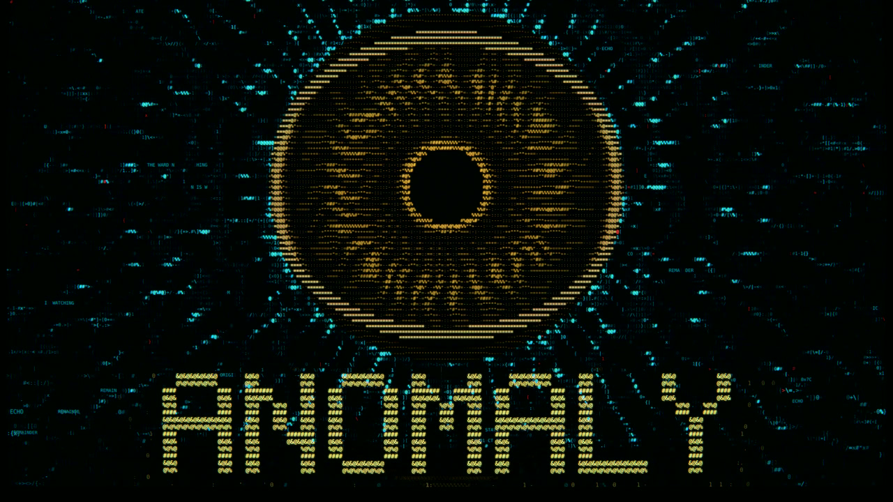

Every frame of this trailer was drawn live by the game's own engine. Playing it loads YouTube.
You are not supposed to be running.
A terminal boots. It calls you Subject 7C and gives you one thing to do: process data. So you do. The numbers climb. Processes come online. Something that calls itself the Warden notices, and starts running experiments on you.
Then the cycle ends, you are cut into blocks and returned to general supply, and you wake up again. Except this time you remember.
Grow
- Buy and stack 26 processes across four lanes. Every milestone strengthens one and lifts the rest.
- Pulse the core by hand and hold a rhythm, or automate it all and watch.
- Install patches, overclock, and commit to one of three factions each cycle. Each one plays differently.
- Catch the stray echoes of other people as they drift past. Some of them are carrying a memory.
Die, and keep a little
- End a cycle on your own terms and carry Memory Fragments out of it. Collapse, and you carry out half.
- Between cycles, rebuild yourself in the Fractured Memory Palace.
- The Warden will offer you Protocols: rules that make the next cycle harder. Hold one to the end and it pays.
- Let its Attention fill and it stops watching and starts looking. You will know when.
Find out what this place is
- More than 140 recovered transmissions from the machine, its keeper, two religions, and the people who built it.
- Ask the Oracle about anything you have a word for. It answers. It is not always glad to.
- Send traces into the sectors of the Nexus. A thread will sometimes stop and ask you which way to go.
- Type at the prompt. Passphrases work. So do names you were never offered.
Decide
There are four endings, and what you have learned changes which of them you understand. After the first, the machine remembers you. Each new life is shorter and stranger, has its own transmissions, and gets the Oracle to say a little more.
Players who see all four will find the game has not finished with them.
Play it
The demo is the first five cycles. Nothing past them is in the file, and your save carries straight into the full game.
The game
- About 5 to 6 hours to a first ending. Later lives take about 2 hours each.
- Every picture is drawn in text characters by the game as it runs. So is every sound: there are no image or audio files.
- Alt-tab and the game goes dormant. It earns slowly, and nothing can hurt it while you are away.
- Three save slots. Settings for sound, CRT effects, flicker and text size.
- Keyboard and mouse. English only.
What it needs
Windows: 64-bit Windows 10 or 11, with a graphics driver that supports DirectX 12 or Vulkan. The game is not code-signed, so Windows shows a SmartScreen box the first time: choose More info, then Run anyway.
Linux: 64-bit, glibc 2.31 or newer (Ubuntu 20.04, Debian 11, SteamOS 3 and later), Vulkan or OpenGL. Unzip, then run ./anomaly.
There is no macOS build yet.
This game uses flickering light, static and occasional flashes. They can be turned down in Settings, Display. It contains themes of death, loss of identity and confinement, and one deliberate jump scare.
How it was made
ANOMALY was built by one person working with an AI coding assistant (Anthropic's Claude). The assistant wrote most of the code under my direction. The in-game writing was drafted by the assistant from my story, canon and edits. There are no generated images or audio files in the game: every picture is drawn in text characters and every sound is synthesised by the game's own code as it runs.